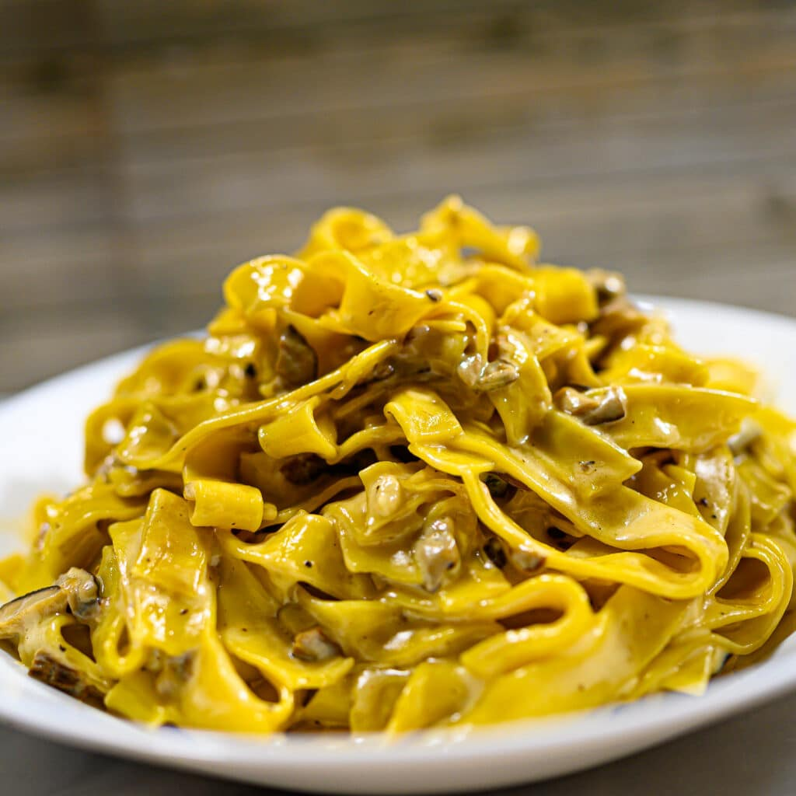

Tagliatelle ai Funghi

Description
Tagliatelle ai funghi (tagliatelle with mushrooms) is a creamy and flavourful veggie pasta dish enriched with a mix of porcini and fresh mushrooms. This easy mushroom tagliatelle recipe makes a super easy vegetarian dinner in less than 30 minutes.
Ingredients
- Fresh tagliatelle
- Porcini mushrooms
- Shiitake mushrooms
- Butter - just 20 g will do
- Mascarpone cheese
- Double cream
Steps
- Add the porcini mushrooms to a small bowl and cover them with boiling water. Leave aside.
- Boil the pasta in salted water until it reaches an almost al dente stage. Reserve 1 cup of water (about 200 ml) before draining.
- In a frying pan, melt the butter, and add the chopped shiitake mushrooms. Cook for 4-5 minutes until they are tender and lightly browned.
- In the meantime, drain the porcini mushrooms, chop them coarsely, and add to the pan. Cook for 1 more minute.
- Add the double cream and continue to stir until it evaporates, about 2 minutes, taking care to scrape the bits on the bottom regularly.
- Add the mascarpone and half of the pasta water. Cook until the sauce is creamy. Add more water if needed, but keep in mind the sauce should be creamy, not watery.
- Add the drained pasta and toss it over moderate heat, until it's cooked through (about 2-3 minutes). Add more pasta water if needed.
- Serve immediately.